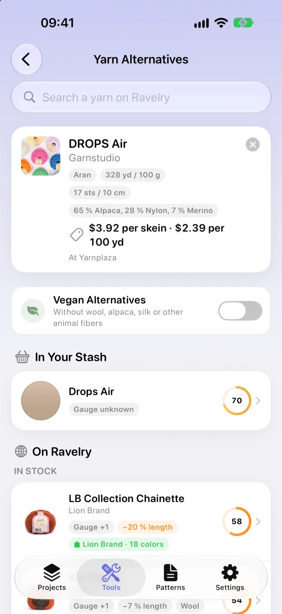

A yarn stash app that knows what you have
A yarn stash grows quietly: a few skeins from a sale, leftovers from a sweater, a souvenir from a yarn shop on vacation. Before long you're standing in a store wondering whether you already own that exact merino. YarnSpace keeps your yarn inventory on your iPhone, iPad and Mac, so you know what you have, how much of it, and what you could make with it.
Free download · iPhone, iPad, Mac & Apple Watch · No account needed
Why keep a yarn inventory at all?
You don't need a spreadsheet for three balls of acrylic. But once your stash fills a basket or two, a list saves you money and time:
- You stop buying doubles, or buy the one skein you were missing in the right color instead of guessing.
- You use what you have. Seeing your stash at a glance makes it much easier to pick a project for it.
- You know if it's enough. Knowing how many meters or grams you have is the first step to working out whether a pattern will fit.
What the YarnSpace stash does
- Every skein you own, with brand, color, fiber, weight and yardage, and how many skeins you have of each.
- Totals that stay up to date: skeins, meters and grams across your whole stash.
- A wishlist for the yarns you'd like to buy, so you remember them next time you're in a yarn shop.
- Patterns for a yarn you have. Pick a yarn from your stash and find patterns that use it.
- Yarn label scan (Pro): point your camera at the label and YarnSpace reads brand, yarn name, color number, fibers, yardage, gauge and needle size, matched with Ravelry. It all happens on your device; the photo is never stored or uploaded.
- Stash check in patterns (Pro): for every pattern, YarnSpace looks for the yarn it calls for, or one that works just as well, and tells you whether you have enough and how many skeins are missing.


When your stash doesn't have the exact yarn
Patterns often call for a yarn that's discontinued, hard to find or simply not in your budget. YarnSpace suggests alternatives by gauge, yardage and fiber, vegan ones too, and compares them side by side: how many skeins you'd need, what they'd cost and where to buy them online. You see all yarn substitutes with YarnSpace Pro. If you'd like to understand what makes a good swap, read our guide on how to substitute yarn.
Tips for organizing a yarn stash
- Keep the label, or at least the dye lot. Skeins from different dye lots can look slightly different in one garment. Note the lot number before the label goes missing.
- Weigh your leftovers. A partly used skein is easy to estimate: divide the yardage on the label by its weight, then multiply by what's left on the kitchen scale. A 50 g skein with 125 m has 2.5 m per gram, so 18 g left is about 45 m.
- Sort by weight, not by color. When you plan a project you usually start from the gauge, so finding all your DK or all your fingering yarn in one place saves a lot of digging.
- Store it safely. Wool and other animal fibers are tasty for moths. Closed boxes or bags, a dry place and an occasional look through the stash keep it in good shape.
- Swatch before you commit. Especially with stash yarn that has no pattern yet, a gauge swatch tells you which needle size and which projects it suits.
Not sure whether your skeins will stretch to a whole sweater? Our guide on how much yarn you need walks you through it.
Free, with an optional Pro upgrade
The yarn stash and the wishlist are free, along with up to three projects at a time, all counters, your patterns and most calculators. YarnSpace Pro, monthly or yearly with a one-week free trial, adds the label scan, the stash check in patterns, all yarn substitutes, unlimited projects, the Apple Watch app and more.
Your stash stays private: YarnSpace needs no account, doesn't track you, and keeps your data on your device and, if you turn it on, in your own iCloud.
Frequently asked questions
Is the yarn stash free in YarnSpace?
Yes. Your yarn stash and wishlist are part of the free app. YarnSpace Pro adds the yarn label scan, the stash check in patterns and all yarn substitutes.
How does the yarn label scan work?
Point your camera at a yarn label. YarnSpace reads brand, yarn name, color number, fibers, yardage, gauge and needle size entirely on your device and fills in the yarn for you. The photo is never stored or uploaded. The label scan is part of YarnSpace Pro.
Can YarnSpace tell me if I have enough yarn for a pattern?
Yes, with YarnSpace Pro. For every pattern, the stash check looks for the yarn it calls for or one that works just as well, tells you if you have enough and how many skeins are missing.
Is my stash synced between my devices?
Yes, through your own iCloud if you turn it on. YarnSpace needs no account, and your stash stays on your device and in your iCloud.
Your whole stash in your pocket
YarnSpace is the knitting and crochet app for iPhone, iPad, Mac and Apple Watch. Free to download.